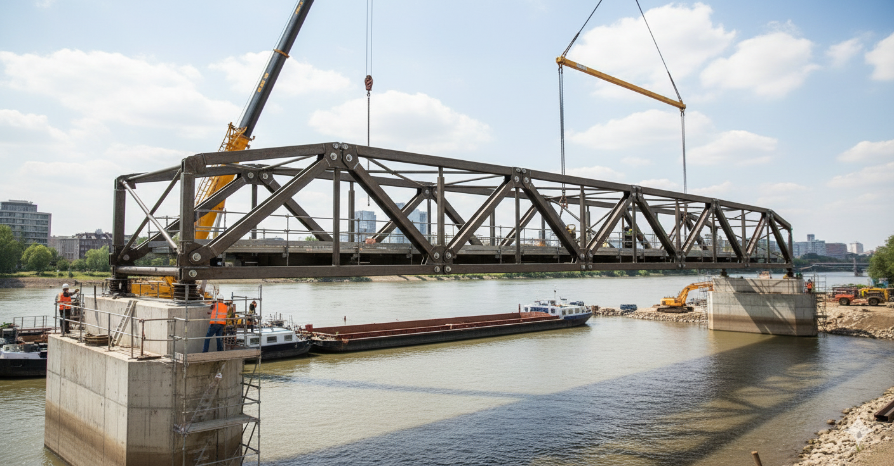
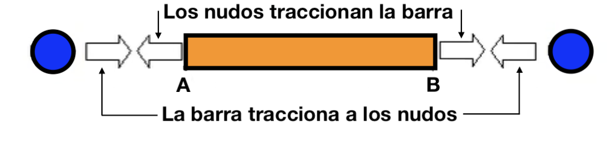

Las estructuras de barras articuladas se utilizan en grúas, torres, puentes, etc. En la modelización de estas estructuras supondremos que son bidimensionales, como hemos hecho con las vigas.
También supondremos que:
- Los nudos son articulaciones perfectas.
- Las cargas externas están aplicadas exclusivamente en los nudos.
- Las deformaciones son despreciables frente a las dimensiones de las barras.
- El peso de las barras puede considerarse despreciable frente a las cargas externas.
Estas simplificaciones implican que las barras se ven solicitadas esencialmente a un esfuerzo dirigido a lo largo de su eje (axil)
Resolver una cercha supone calcular cómo trabajan todas las barras, y cada barra introduce sólo una incógnita, la magnitud del axil.
El sentido del axil podrá ser de tracción o compresión, dependiendo del signo que obtengamos.
|
AXIL DE TRACCIÓN  |
|
AXIL DE COMPRESIÓN
|